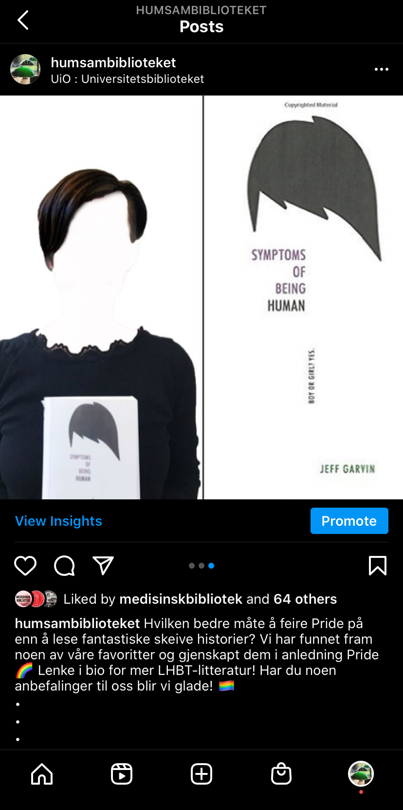
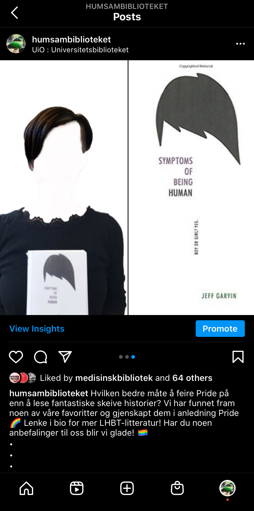

Universitetsbiblioteket, bibliotek for humaniora og samfunnsfag
I min tid som studentansatt ved HumSam-biblioteket har jeg produsert innhold til HumSam sin instagram og facebook-side. Her er noen av prosjektene jeg har skapt eller deltatt i.
Konkurranse i stories
Videoer til lockdown-periode
Da Norge stengte ned i mars trengte biblioteket å formidle informasjon om alternative tjenester og løsninger. Disse videoene ble lagt ut som "stories" på instagram og forsvinner etter 24 timer. Formålet er å formidle annerledes-tilbudene som eksisterte da samfunnet som helhet var stengt, på en lettfattelig og morsom måte.
Introduksjon til Unntaksbiblioteket
Bok-anbefaling til Pride
Til pridemåneden 2020 satt Universitetsbiblioteket sammen en anbefaling av faglitteratur. I den anledning foreslo og gjennomførte jeg en gjenskaping av ulike banebrytende skeiv litteratur.
 
